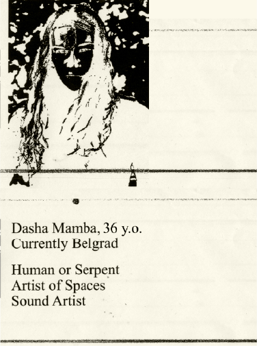

Chapter 1
Tearoom
This ongoing nomadic project began in 2015 admist rave culture. At it's core it's
a pop-up cafe, realised over
a hundred times. Most centered around tea, designed as a means to reconnected with oneself and mindfully process the rave experience – intense elevated and perhaps even agressive.